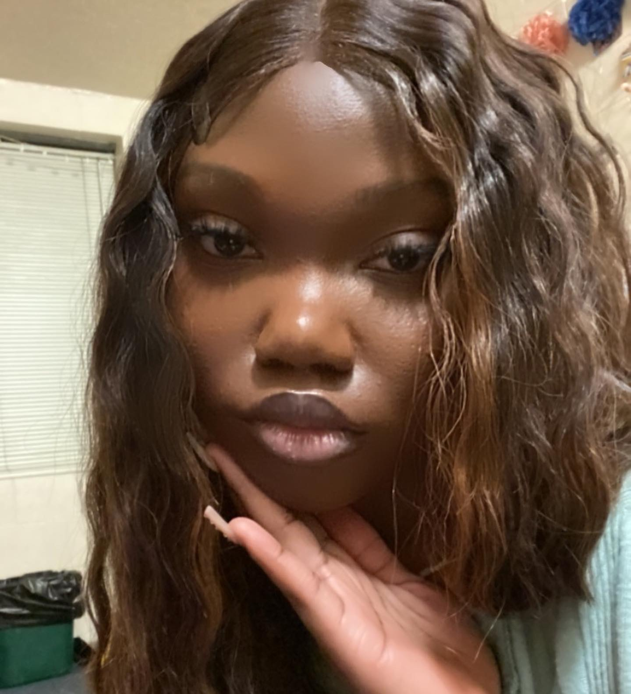

Who made this?
Author: Chiamaka Okpara 2nd year
I am student at the University of Pittsburgh studying Information Science and Tech Design. I am a Nigerian first generation immigrant coming to the United States with just my sister and I at the age of 12 in 2016.